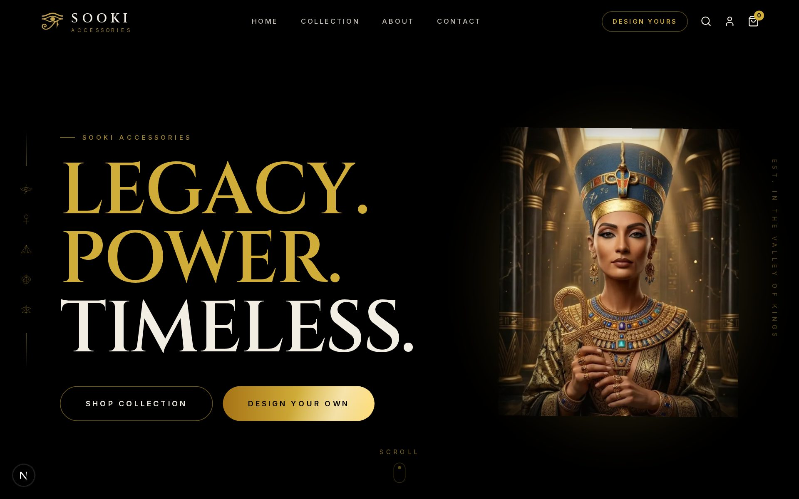
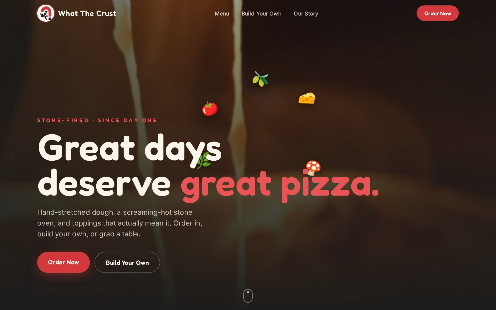
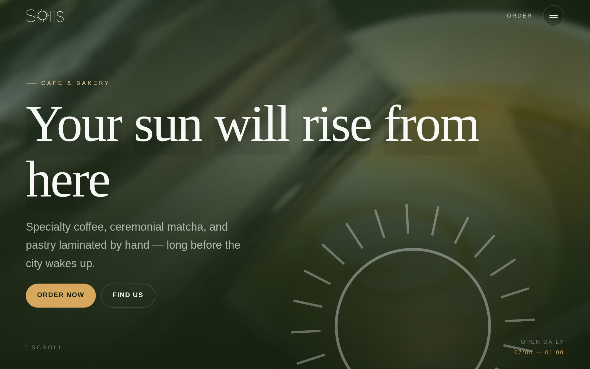

Hello! I'm Yassen, I'm a student in the faculty of AI in AAST and this is my portfolio where you can see all my projects that i've done.
Scroll
Two ways in
Selected sites



A café and bakery site that actually takes orders. React and GSAP on the front; Supabase Postgres behind it — the menu is served from the database, and checkout runs through one server-side function, so the browser sends nothing but ids and quantities and every price is read server-side. Orders are tracked by a receipt token instead of an account, and money is stored in integer piastres so no bill is ever off by a rounding error.
Background
The full background
Education, experience, certifications and awards live on the animated CV — the whole thing as a page you scroll.
Skills
Tools
Languages